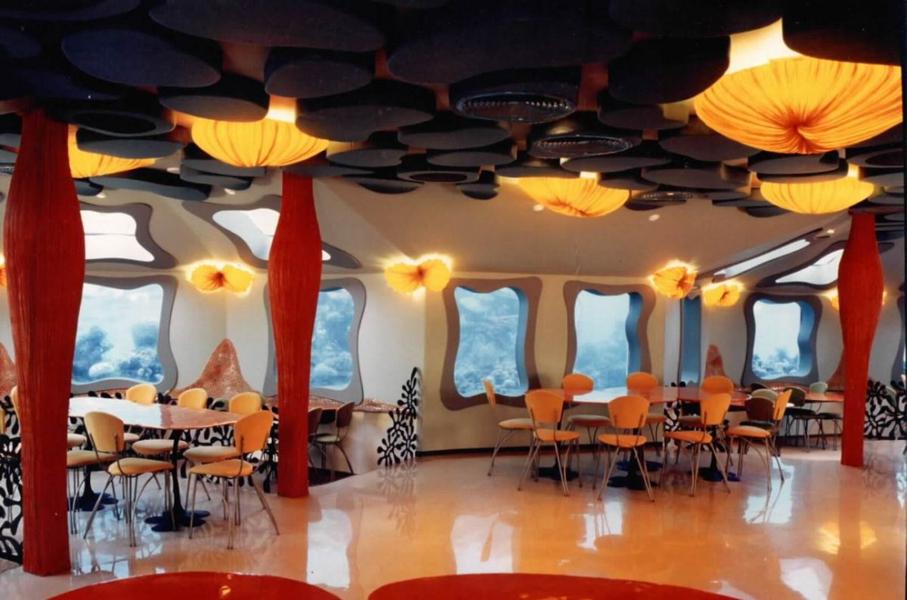
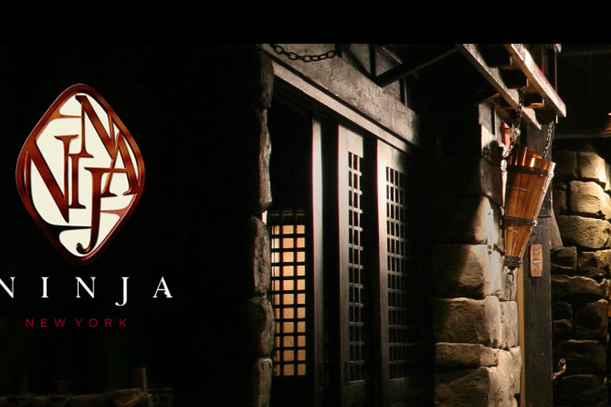
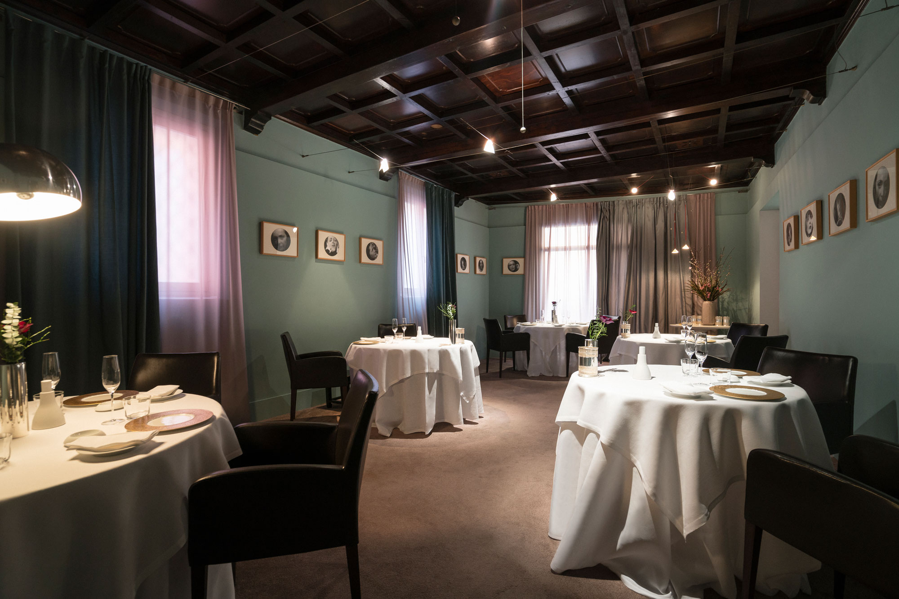

Watch the fish while they watch you eat fish. Well, as gross as it sounds, it’s actually quite marvelous when you think that you’re eating your meal under the sea. Plus, you can always order steak instead!
A meal here is anything but peaceful. With ninjas flying in from all directions, including creeping out of cupboards while you’re eating or jumping right at you as you head towards the washroom, a reservation here is definitely not for the faint-hearted.
Nestled down a cobbled street in peaceful Modena, Osteria Francescana is the gem of Italian gastronomy that rose to the top of The World’s 50 Best Restaurants last year in the hands of talented chef Massimo Bottura. But it could have been very different – in its early days, the restaurant almost closed after conservative locals were resistant to Bottura’s daring approach to cooking.
